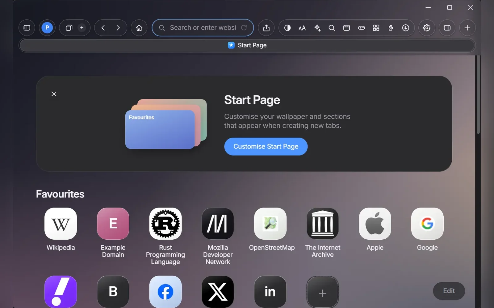
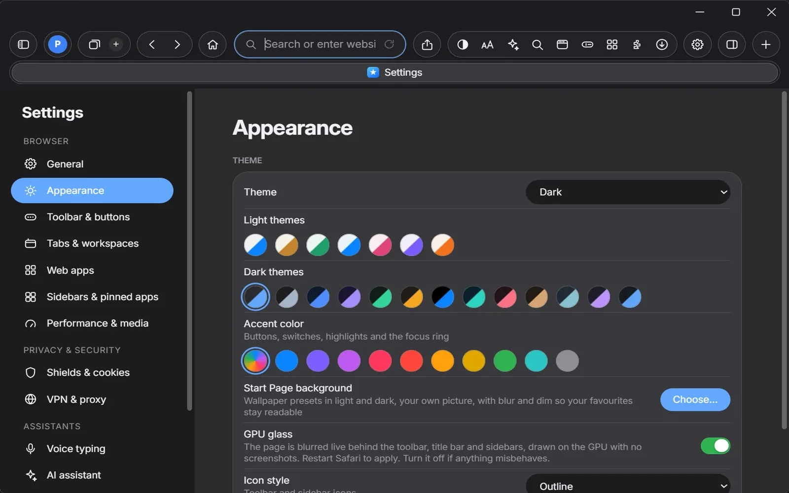
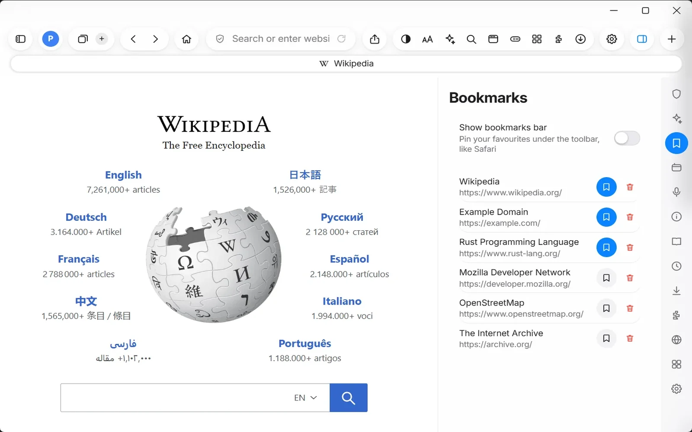
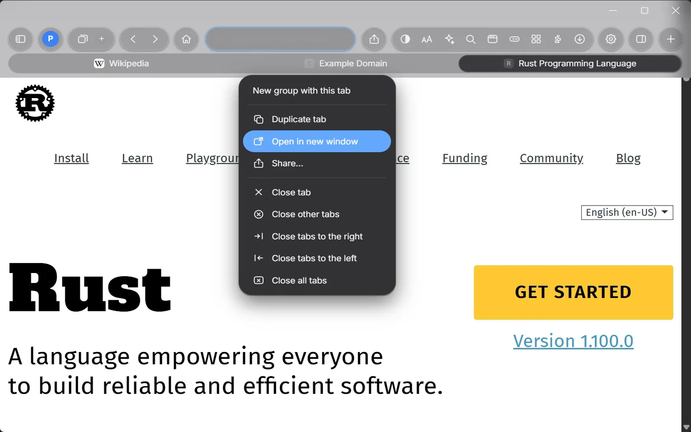

NewSee what's new in Safari for Windows›
Live GPU glass behind the toolbar and sidebars, built-in Shields, an AI assistant and on-device voice typing, on the Chromium WebView2 engine. One small installer, no admin rights.
Windows 10 and 11, 64-bit · An independent project, not made by or endorsed by Apple Inc.

Favourites, wallpapers and your own layout. Drag to reorder, add folders.

The page blurs behind your toolbar as you scroll. Live on the GPU, in light and dark.

18 themes and ten accent colours. Pick the look you like.

Bookmarks, reading list, history and downloads. Import from Chrome, Edge and Brave.

Tab groups, workspaces and compact tabs. Open in a new window, share or close others.